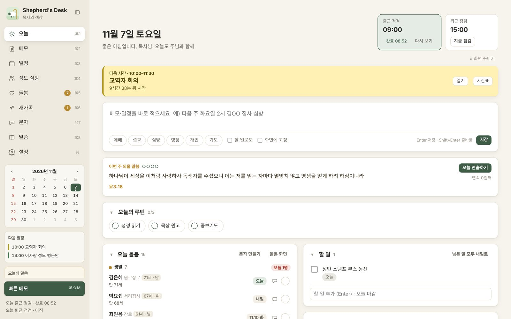
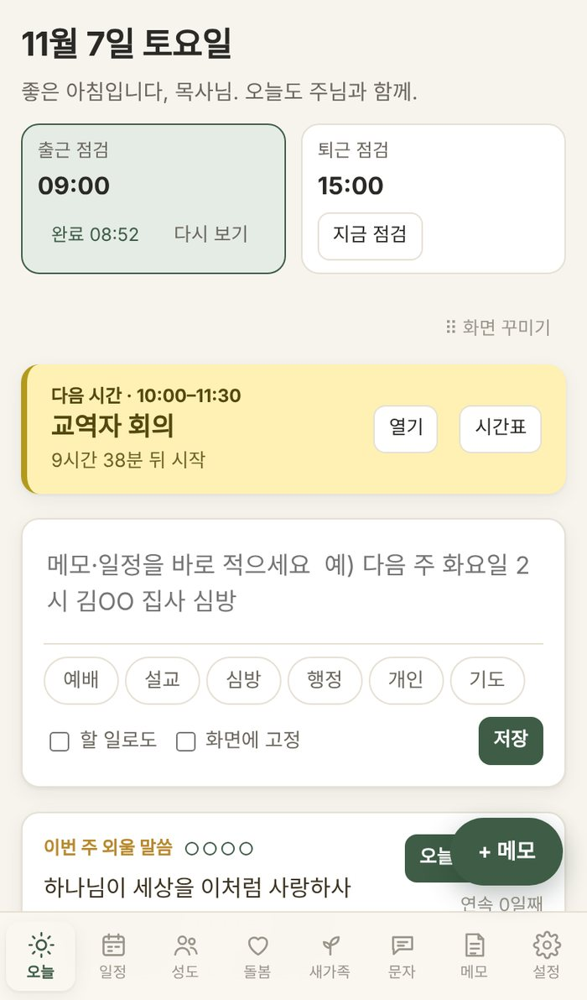
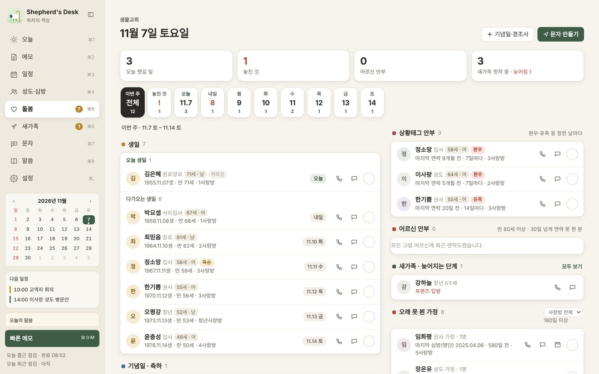
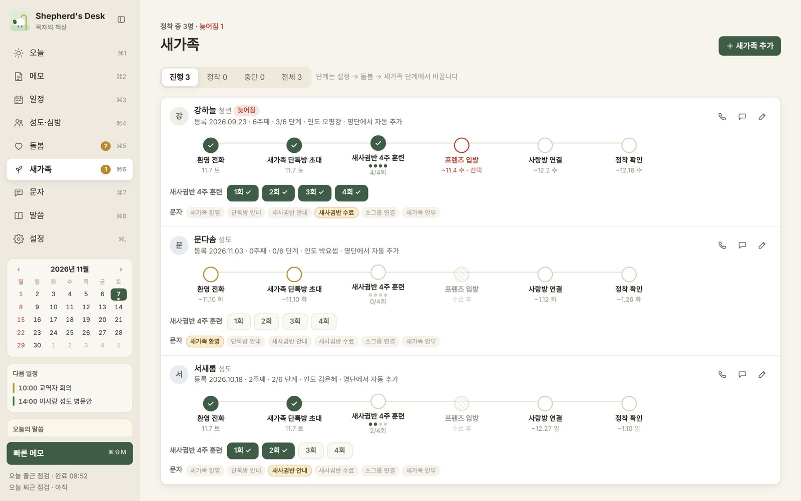
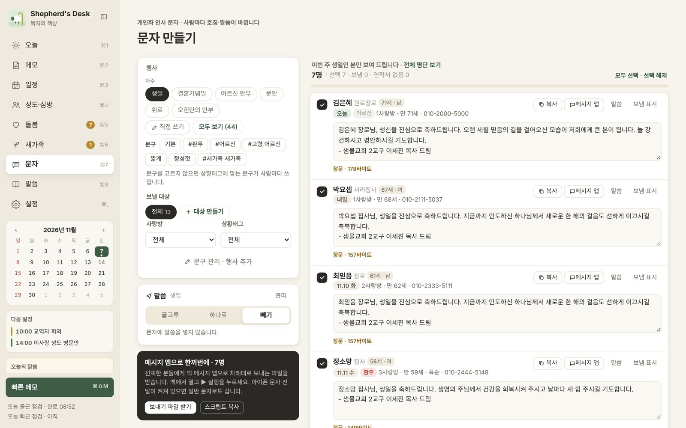
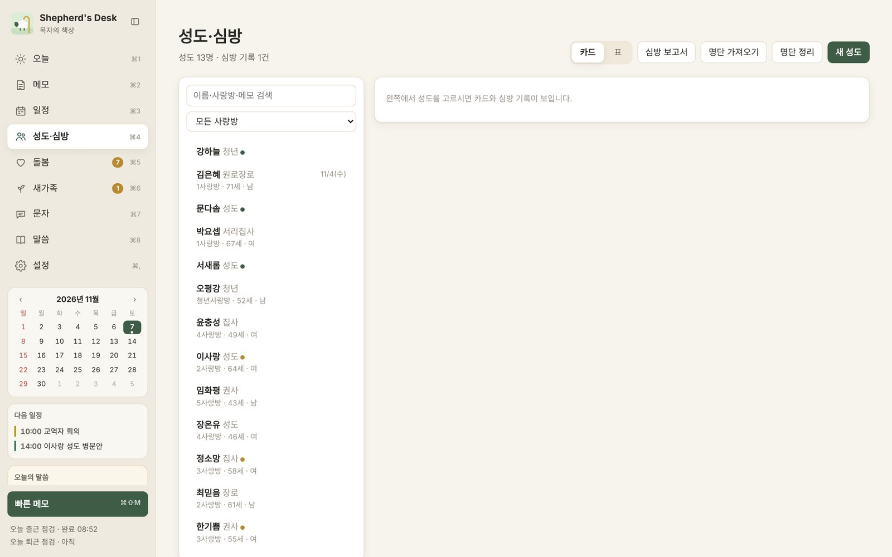
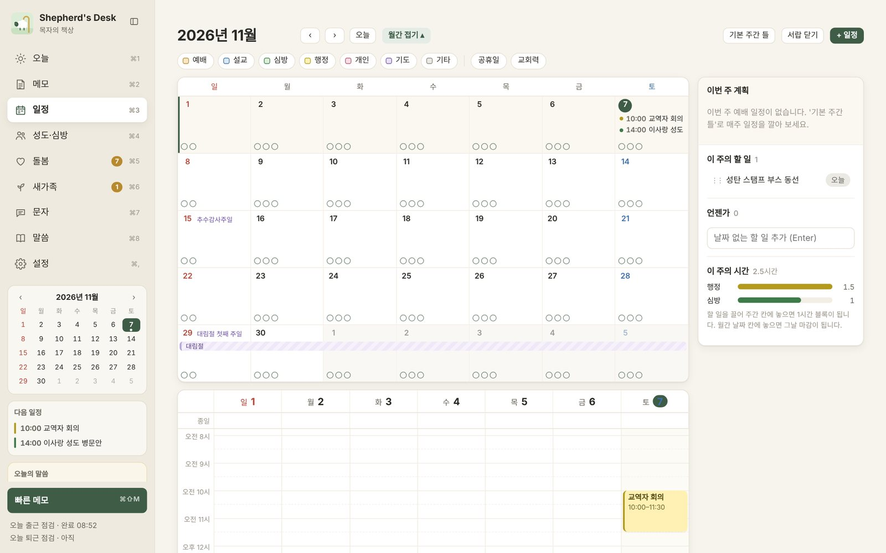

새 버전 1.1 휴무일 바로 바꾸기, 새 버전 알림이 생겼습니다 →
성도 한 사람을 기억하는,
목회자의 책상.
심방, 돌봄, 새가족, 문자, 일정을 한 화면에 모았습니다. 오늘 누구를 챙겨야 하는지 먼저 알려 드립니다. 교구 목회자가 직접 만들고 직접 쓰는 무료 도구입니다.
무료 · macOS 11 이상 (애플 실리콘) · 웹은 아이폰, 아이패드, 윈도우 브라우저


만든 이야기
한 사람을 기억하는 일을 돕고 싶었습니다.
저는 한 교회의 교구를 맡은 목회자입니다. 새벽기도와 수요·금요예배 설교, 장례와 결혼 예배, 사랑방과 환우·개업·이사 심방, 그리고 행정 회의까지. 교구 목회자의 하루는 늘 바쁘게 지나갑니다.
그러다 보면 꼭 기억해야 할 일을 놓치곤 했습니다. 생신을 맞은 권사님께 인사를 못 드리고 지나갔고, 장례를 치른 가정에 한 달 뒤 다시 연락드려야 할 때를 놓쳤습니다. 새가족이 등록하고 몇 주 지나 조용히 교회를 떠나신 것을 늦게야 알았습니다.
성도 명단은 엑셀에, 심방 기록은 수첩에, 일정은 휴대폰 달력에, 문자 문구는 메모장에 흩어져 있었습니다. 목양은 결국 한 사람을 기억하는 일인데, 그 기억을 도와줄 도구가 없었습니다. 그래서 직접 만들었고, 같은 고민을 하는 동역자들과 나누고 싶어졌습니다.
이세진 목사 · Shepherd's Desk를 만든 사람
왜 필요한가
한국 교회 목양 현장을 위해 만들었습니다.
외국에서 만든 교회 관리 프로그램은 우리 교회의 직분과 음력 생일, 명절 인사, 사랑방 문화를 담지 못합니다. 교구 목회자가 매일 마주하는 일에서 출발했습니다.
교구 하나에 수백 가정
수백 명의 생일과 기념일, 경조사, 심방 주기를 머리로 다 기억할 수는 없습니다.
우리 교회의 언어
장로, 권사, 안수집사, 서리집사, 사랑방, 새가족반. 처음부터 이 말로 만들었습니다.
돌봄에는 때가 있습니다
위로와 축하가 가장 필요한 때를 알려 주는 것만으로 목양이 달라집니다.
새가족의 첫 두 달
환영 전화, 단톡방, 새사귐반, 사랑방 연결까지 단계별로 함께 챙깁니다.
문자 한 통에도 목자의 마음
이름만 바꾼 단체 문자 대신, 받는 분의 직분과 형편에 맞는 문구를 보냅니다.
성도 정보는 교회 안에
서버가 없습니다. 모든 정보는 목사님의 맥과 구글 드라이브에만 저장됩니다.
장례 뒤당일 · 7일 · 30일 · 기일
입원·수술 뒤3일 · 7일 · 14일
이사 뒤14일 · 입주 심방
새가족 등록 뒤60일 · 6단계
어르신만 80세 이상 · 30일마다
오래 못 뵌 가정180일 넘게 연락 없음
생일양력·음력 · 칠순·팔순
결혼기념일·개업해마다
기능
목양의 하루가 한 화면에 있습니다.
날짜와 간격은 모두 설정에서 교회에 맞게 바꿀 수 있습니다.
하루를 여는 첫 화면
오늘 생일인 분, 돌봄할 분, 다음 일정, 할 일을 한눈에 봅니다.
- 출근·퇴근 점검으로 하루를 시작하고 마무리합니다
- 카드를 끌어서 화면 배치를 바꿉니다
- 이번 주 외울 말씀을 함께 연습합니다
챙길 분을 먼저 알려 주는 알림판
이번 주 생일, 환우·유족 안부, 어르신 안부, 오래 못 뵌 가정이 날짜별로 모입니다.
- 음력 생일을 양력으로 바꿔 알려 줍니다
- 전화·문자·심방을 기록하면 목록에서 정리됩니다
- 정한 시간에 오늘 돌봄을 알려 줍니다 (맥)

등록부터 정착까지 단계별로
환영 전화부터 정착 확인까지 단계마다 기한이 있고, 늦어지면 빨간색으로 알려 줍니다.
- 명단을 올리면 최근 등록자를 새가족으로 넣어 줍니다
- 단계마다 보낼 문자가 준비되어 있습니다
- 단계 이름과 기한은 교회에 맞게 바꿉니다

받는 분마다 다른 문자
생일, 위로, 어르신 안부, 명절 인사 등 상황별 문구가 100개가 넘습니다. 환우·유족·어르신 같은 상황에 맞는 문구가 골라집니다.
- 직분이 무엇이든 문자에는 "장로님", "집사님"으로
- 맥에서는 메시지 앱으로 여러 분께 차례대로 보냅니다
- 보낸 기록이 남아 두 번 보내지 않습니다

교회 명단 그대로, 한 분의 기록
교회에서 쓰는 엑셀 명단을 그대로 불러옵니다. 성도 카드에 심방 기록과 기도제목, 가족이 쌓입니다.
- 나이·성별·직분을 모든 화면에서 함께 봅니다
- 심방 뒤 후속 연락을 할 일로 만들어 줍니다

사랑방 심방도 한 번에
일정에 함께한 성도를 여러 분 넣고, 끝나면 모두에게 심방 기록을 한 번에 남깁니다. 교회력과 공휴일도 함께 보입니다.
- 일정 시간이 되면 알림이 뜹니다 (맥)
- 전화 중 적은 메모를 화면에 붙여 둡니다

받는 분 ·
명단의 직분은 그대로 두고, 문자에서만 기본 직분으로 부릅니다.
맥·웹
책상에서는 맥으로, 심방 길에는 휴대폰으로.
목사님의 구글 드라이브를 통해 맥과 휴대폰이 같은 내용을 봅니다.
| 맥 앱 | 웹 버전 |
|---|
| 쓸 수 있는 기기 | macOS 11 이상, 애플 실리콘 맥 (M1 이후) | 아이폰, 아이패드, 윈도우 PC 등 브라우저 |
| 일정·돌봄 알림 | 정한 시간에 알림 | 화면을 열었을 때 보임 |
| 문자 보내기 | 메시지 앱으로 여러 분께 차례대로 | 한 분씩 문자 앱으로 |
| 화면에 메모 붙이기 | 됨 | 메모 화면에서 보기 |
| 설치 | DMG 내려받아 옮기기 | 구글 앱스크립트 사본 만들기 |
개인정보
성도의 정보는 목사님 곁에만 있습니다.
서버가 없습니다
회원가입도 로그인 서버도 없습니다. 만든 사람도 목사님의 성도 정보를 볼 수 없습니다.
내 맥, 내 드라이브
정보는 목사님의 맥과 목사님 구글 계정의 드라이브에만 저장됩니다. 웹 화면도 목사님 계정에서만 열립니다.
통계를 보내지 않습니다
어떤 기능을 썼는지, 누구에게 문자를 보냈는지 어디에도 보내지 않습니다. 백업 파일은 따로 보관해 주세요.
설치
세 단계면 시작할 수 있습니다.
내려받기
맥은 ShepherdsDesk-AppleSilicon.dmg를 받아 응용 프로그램 폴더로 옮깁니다. 웹은 앱스크립트 사본을 만듭니다.
확인 창이 뜨면
애플 인증을 받지 않은 무료 프로그램이라 처음 한 번 확인 창이 뜹니다. 여는 방법을 보세요.
명단과 말씀 넣기
교회 성도 명단 엑셀과 말씀 본문 엑셀을 불러오면 오늘 화면, 돌봄 알림판, 문자가 바로 채워집니다. 처음 설정
설치가 막혔나요? 지금 보이는 화면을 고르세요.
묻고 답하기
자주 받는 질문입니다.
정말 무료인가요?
네. 유료 기능도 광고도 없습니다. 목회자들과 나누려고 만들었습니다.
우리 교회 명단 양식도 불러올 수 있나요?
엑셀(xlsx)이나 CSV 파일이면 됩니다. 이름, 직분, 생년월일, 전화번호, 사랑방 같은 열을 알아서 찾아 연결합니다.
윈도우에서도 쓸 수 있나요?
지금은 웹 버전으로 쓰실 수 있습니다. 윈도우 프로그램은 쓰시는 분들의 의견을 들으며 준비하겠습니다.
인텔 맥에서도 되나요?
지금은 애플 실리콘 맥(M1 이후)만 지원합니다. 인텔 맥에서는 웹 버전을 써 주세요.
성경 말씀은 어느 번역인가요?
번역본마다 저작권이 있어서 프로그램에는 구절 주소만 들어 있습니다. 말씀 화면에서 엑셀로 내보내 쓰시는 번역의 본문을 채운 뒤 다시 불러오면 됩니다. 방법 보기
컴퓨터를 바꾸면 데이터는 어떻게 옮기나요?
구글 드라이브 동기화를 켜 두셨다면 새 맥에서 연결만 하면 됩니다. 설정의 [백업 파일 저장]으로 파일을 옮길 수도 있습니다.